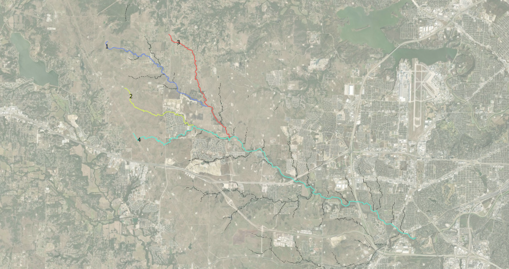

Stormwater Training Tools
Transform Flow Path Explorer
Compare four candidate watershed flow paths, or hold one Path 1 setup fixed and explore lag-ratio and peak-rate-factor sensitivity. The app connects each assumption to travel time, hydrograph timing, and peak flow.
QC lesson complete. The full flow-path and transform sensitivity explorer is now unlocked.
Travel-Time and Peak Summary
Show segment lengths and coefficients
Candidate Flow Paths

The map provides the original spatial context. Calculations exclude the common lower 43,153.667588-ft downstream channel segment.
Method notes
The same excess-precipitation time series and drainage area are used for every path. Only the travel-time assumption changes. This isolates transform sensitivity.
The common lower 43,153.667588-ft channel segment is excluded from every candidate path so the comparison focuses on the divergent upstream portions.
The 300-ft TR-55 sheet-flow setting is retained as a sensitivity case and is flagged in the interface.
Sheet-flow roughness, shallow-concentrated surface type, channel velocity, Kerby retardance, lag ratio, and peak rate factor are explicit teaching controls. Geometry and precipitation remain fixed.
The transform-sensitivity tab uses the NRCS gamma dimensionless unit-hydrograph family so the selected peak rate factor changes both hydrograph shape and peak while runoff volume remains fixed.